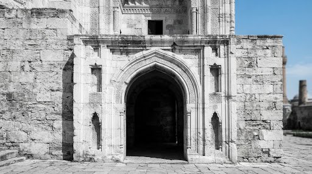
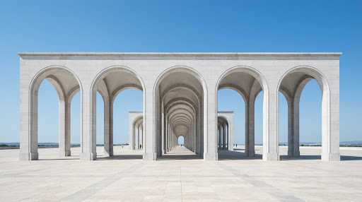

Том I
99 МПа
Архитектурный монограф
Исследование структурной целостности и эстетики монументальных форм. Болгарский ансамбль как символ архитектурной преемственности.
01 / ИНСПЕКЦИЯ
Материальность и форма
Арочные конструкции Болгара представляют собой уникальный синтез традиционной исламской архитектуры и современных методов реставрации камня. Каждая деталь продиктована необходимостью долговечности.
Материал
Белый известняк
Прочность
99 МПа (Предел сжатия)
Геометрия
Стрельчатая арка

FIG. 24 / ДЕТАЛЬ СВОДА


Прочность как высшая форма эстетики.
Мы не просто строим объекты; мы создаем монолиты времени. 99 МПа — это не просто название, это стандарт сжатия, при котором форма становится вечной.
12
Проектов наследия
2.5k
Тонн известняка
∞
Срок эксплуатации